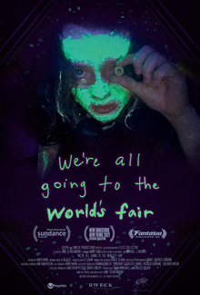

We Are All Going to the World's Fair

Jane Schoenbrun
2021
86 minutes
Wikipedia link
IMDB link
TV Tropes link
This is text.
Time to choose something different:
- I bet some kinky boots would have gotten that girl some more social media followers... - Turn to section 74
- ...as long as she didn't go and say something stupid and anti-semitic! - Turn to section 167
- I love the suspense combined with an anti-climax. Could I get something suspenseful and a little more traditional Hitchcockian, please? - Turn to section 201